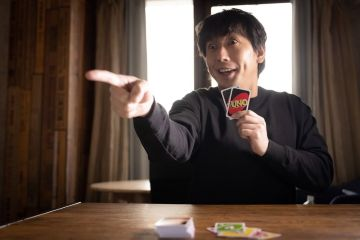
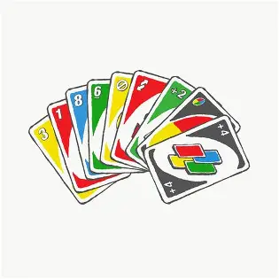
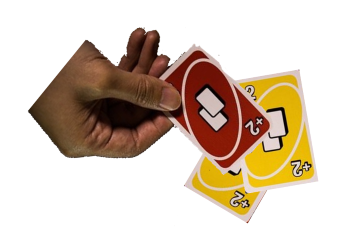

UNO
ここでは,UNOの歴史や遊び方について説明していきます.
・UNOの歴史
UNOは1971年にアメリカ・オハイオ州のシンシナティで理髪店を営んでいたマール・ロビンスが制作したものが始まりとなっています. カードゲーム好きのマールが,より簡単でルールをおぼえやすく,小さな子供でも遊べるものを目指して制作しました. 名前はマールの息子レイが名付けたものであり,スペイン語で「1」を表しています. マールは開発費のために自宅を売却するまでに至ったそうです. はじめは彼の理髪店で販売していましたが,キャンピングカーでアメリカ国内を回りながら販売し,キャンプ場で実際に体験する機会を 設けることで宣伝していきました.次第に小売店から注文を受けるようになり,人気を増していきました.
1980年にロバート・テザックが今のデザインに変更し,人気はさらに加速. 様々なバリエーションのUNOが販売されるようになり,2017年には「世界で最も多く販売されているカードゲーム」に 認定されました.2021年には50周年を迎え,今もなお世界中で親しまれています.
・UNOを使ったゲームの種類
-

UNOの基本ルール
・手札は7枚からスタート.
・残りを山札にし,山札から数字のカードを1枚出しておく.
・場に出ている1番上の札と数字か色が同じなら場に出すことができる.重ねて複数枚出すことはできない.
・出せるカードがないときは,山札から1枚引く.引いたカードが出せるなら,すぐに出してよい.
・手札が残り1枚になるたび,「UNO」と宣言する.次の人がカードを出すまでに 誰かに言い忘れを指摘されると,カードを2枚引かなくてはならない.
・手札を最初に使い切ったら上がりです.禁止上がりはありません.
・勝者が決まった時に,他のプレイヤーが持っている手札で得点を計算します.これを繰り返して, 得点が500点に到達したプレイヤーが勝者になります.
-

UNOの公式バリエーションルール
主な公式バリエーションルールを紹介します.かなり多いですね.
・UNOアタック 山札がカードランチャーになっています.これにより,カードを引く枚数がランダムになっています.
・UNOチームズ チーム戦のUNOです.チーム全員の札を使い切ったら勝利です.
・UNOフレックス 色を変えられる数字カード「フレックスカード」を使うUNOです.
・UNOフリップ カードに裏表があり,途中で切り替わることでカード効果が変わります.戦略性が増したUNOです.
・UNO H2O アウトドアな環境でも遊べる,防水使用のUNOです.
・UNOハンパねぇ! 通常のルールに加えて4種類のスペシャルルールと6種類の特殊カードが追加されて,より刺激的になっています.
・DOS 残り2枚になったら「DOS」と宣言する,場の札が2枚あるなど,新感覚のUNOです. ちなみに「DOS」とはスペイン語で「2」を意味します.
・コラボUNO マインクラフトやポケットモンスター,ミニオンズなど人気作品とコラボしたUNOが多数存在します. それぞれ特殊なルールが存在します.
-

UNOのローカルルール
UNOのローカルルールについて紹介します.一部のルールは ローカルルールであることをあまり知られていないかもしれません.
・カードを重ねて出す(数字,リバース,スキップ,ドロー)
・重ねて出すことで上がれる場合は「UNO」を宣言する
・カードの数字を足し引きする
・数字のカードを連番で出す
・ドロー2,4を出された人がドロー2,4を重ねることで次の人に回る
・数字カードでしか上がることができない
・得点計算をしない
UNOは実際に遊んでも面白いですが,調べてみると発見がたくさんあるので, いろんな方向から楽しんでみてください!